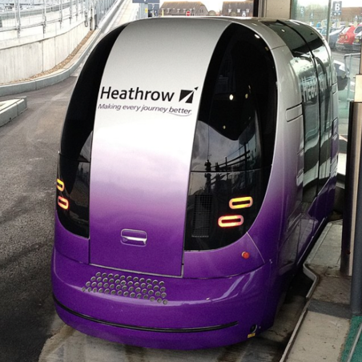
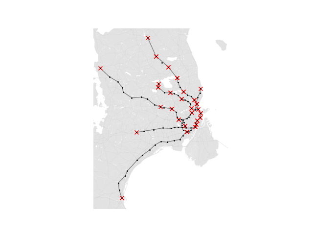

Model-Based Systems
Wouldn’t it be nice if taxis never got stuck in traffic? If buses took you to straight your destination, with no stops or detours? If you never had to share a metro carriage with other passengers? The mode of transport known as Personal Rapid Transit (PRT) offers all these advantages and more. In this report we are looking at the benefits of the PRT system compared to a traditional rail network. Through research and various tests, we have come up with a set of measurements and controls which we can use to model a PRT in place of S-trains in the greater Copenhagen area. Through simulation we were able to conduct tests which provided data we could then use to compare the two systems, enabling us to tell which scenarios the system excelled in, and which they struggled with.
